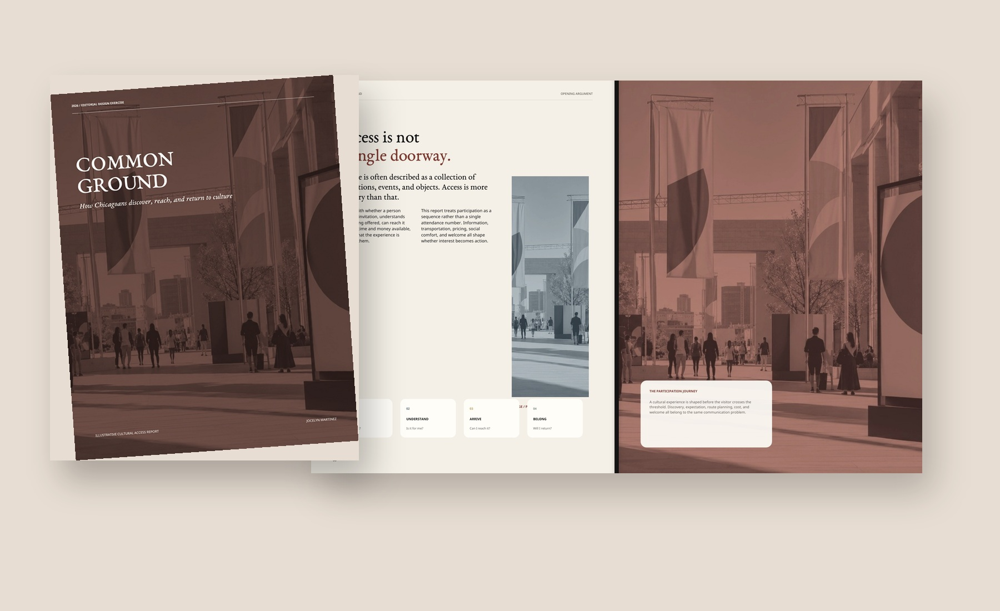
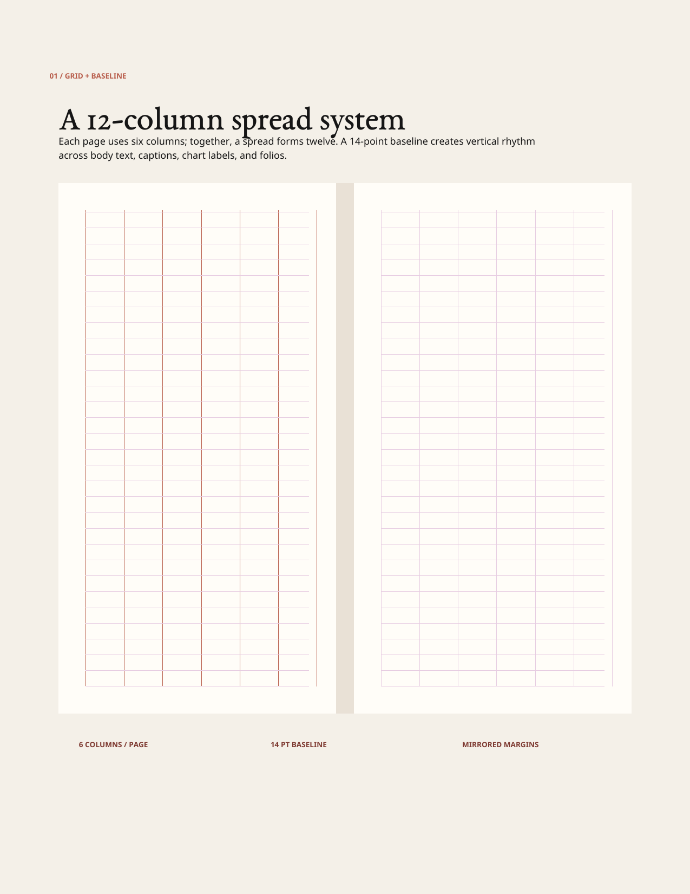
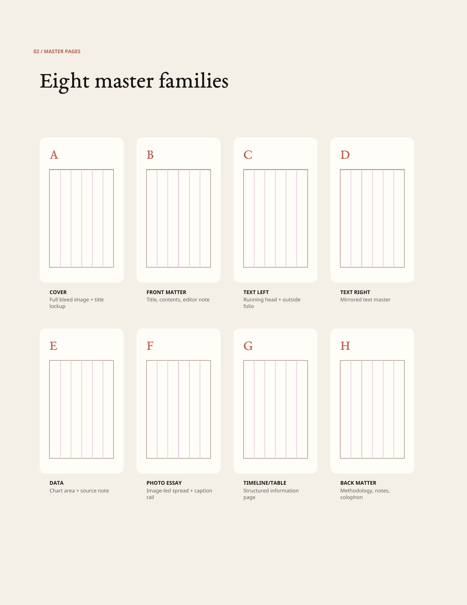
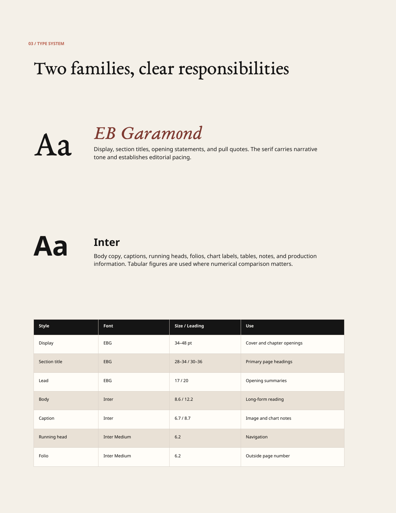
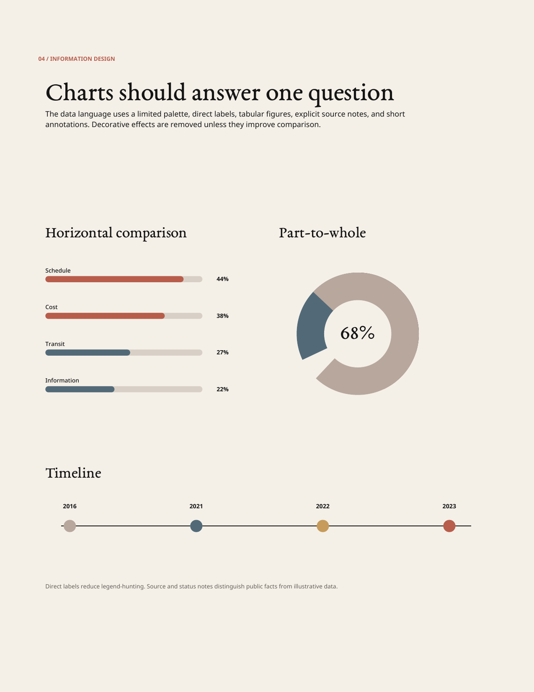
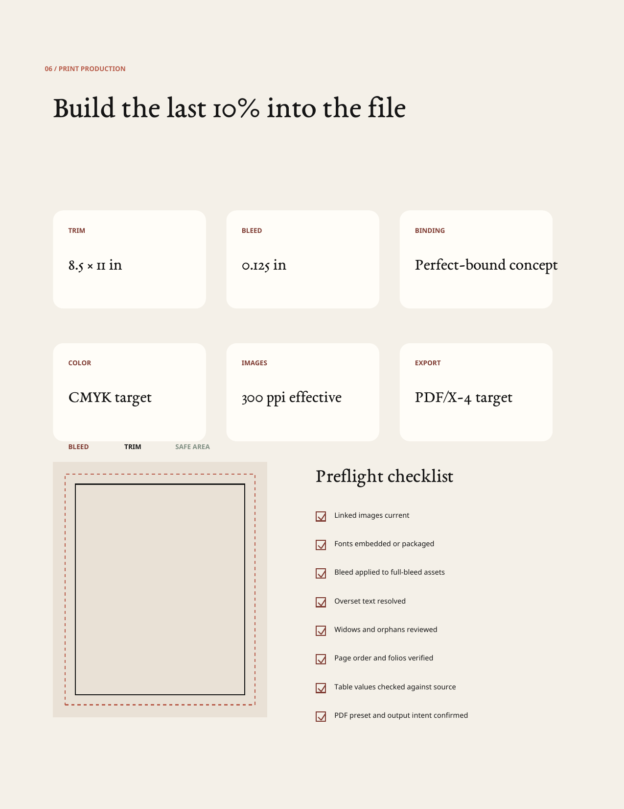

Sustained publication design
Twenty-eight pages with front matter, opening spreads, long-form articles, photo essay, data, methodology, sources, and closing matter.
Self-directed concept · Editorial & information design
A 28-page cultural access report designed to hold long-form narrative, public-source context, illustrative data, photography, tables, timelines, footnotes, and production detail inside one coherent editorial system.
This project replaces the earlier visual-summary concept. The publication and editorial appendix are the primary artifacts. Public facts are sourced; survey percentages and voices are clearly labeled illustrative scenario content.

The editorial challenge
Common Ground asks how people notice, understand, reach, and return to cultural experiences. The report needed to move between public-source facts, an illustrative survey model, long-form argument, participant voices, photography, a timeline, tables, and recommendations without feeling like a collection of unrelated page templates.
The solution is a restrained system with two type families, mirrored page furniture, repeatable data rules, and a flexible grid. Density changes from spread to spread, but navigation and hierarchy remain consistent.
Twenty-eight pages with front matter, opening spreads, long-form articles, photo essay, data, methodology, sources, and closing matter.
Direct labels, tabular figures, source notes, captions, footnotes, tables, a timeline, and an implementation matrix.
Master-page families, paragraph and character roles, baseline rhythm, bleed, preflight, packaging, and PDF/X production targets.
Scope: The finished publication is a designed PDF prototype. The downloadable editorial appendix specifies the exact master-page, style, grid, and preflight architecture for a native InDesign rebuild. Do not claim that an INDD file already exists.
Editorial sequencing
The report is not organized by asset type. It follows the reader’s questions: What is access? What patterns are visible? What does participation feel like? What should a team do next?
Title, contents, editor note, opening argument, and participation journey.
Overview figures, discovery channels, barriers, travel time, and regional comparison.
Long-form argument, photo essay, community voices, and public-source timeline.
Service framework, recommendations, implementation matrix, methodology, and closing statement.
Actual finished spreads
Select any spread to inspect it at full size. The gallery shows the report itself—not a generated overview board or placeholder mockup.
Combines a text-led left page, image-led right page, caption panel, and a four-stage participation model.
Large figures, part-to-whole data, direct labels, explanatory notes, and an illustrative-data disclaimer.
Drop cap, two-column reading, subhead, pull quote, footnote, question panel, and a journey diagram.
Horizontal comparisons on one page; image-led analysis and travel-time bands on the facing page.
Four crop behaviors, image numbering, caption rails, and a facing interpretive essay.
Quote hierarchy, speaker metadata, pacing rules, an image rail, and an explicit fictional-content note.
Real contextual milestones, 77-area visual metaphor, direct source notes, and large factual callouts.
Regional strategy cards, row hierarchy, tabular figures, alternating fills, and a supporting chart.
A dark chapter page gives way to a reusable four-part framework with operational actions.
Six categorized actions followed by an impact-effort matrix for prioritization.
The structure beneath the pages
A separate eight-page document specifies the grid, baseline, master-page families, typography, chart language, image treatment, print targets, file structure, and preflight workflow.

Each page uses six columns with mirrored margins. Across a spread, the twelve-column system supports narrow captions, reading columns, data panels, and image modules without requiring a new grid for every section.

Master pagesCover, front matter, mirrored text, data, photo essay, timeline/table, and back-matter structures.

Paragraph stylesDefined display, section, lead, body, caption, running-head, and folio roles with sizes and leading.

Data systemHorizontal bars, part-to-whole charts, timelines, direct labeling, tabular figures, and source/status notes.
Clarity without flattening the story
The last 10%
The production appendix does not merely list “bleed” and “CMYK.” It shows the page geometry, intended package structure, export target, and a repeatable preflight checklist.

The report is conceived as an 8.5 × 11-inch perfect-bound publication. The native production build should use 0.125-inch bleed, 300-ppi effective imagery, CMYK output, packaged links, and a PDF/X-4 export reviewed through a bound color proof.
Portrait report format with mirrored page furniture.
Cover through back cover, including methodology and sources.
Six per page with a 14-point baseline rhythm.
Applied to all full-bleed image and color fields.
Effective resolution target at final placed size.
Production target after native preflight and proofing.
The report demonstrates editorial pacing. The appendix demonstrates how the publication should be structured, rebuilt, checked, and handed off in a production environment.
What this project now proves
The earlier version relied too heavily on sparse pages and a summary-board aesthetic. This rebuild is more useful as hiring evidence because the publication itself has to sustain a real reading experience across twenty-eight pages.
The strongest design decision is the separation between continuity and pacing. Running headers, folios, type roles, margins, caption rules, and data behavior remain stable. Image scale, column count, contrast, and information density change according to the content.
A coherent report that moves between essays, data, voices, photography, tables, and recommendations without losing navigation.
The final visual system should still be rebuilt in native InDesign before claiming an INDD-based workflow in an application.
Package the InDesign file, run native preflight, order a bound proof, document color adjustments, and photograph the physical publication.